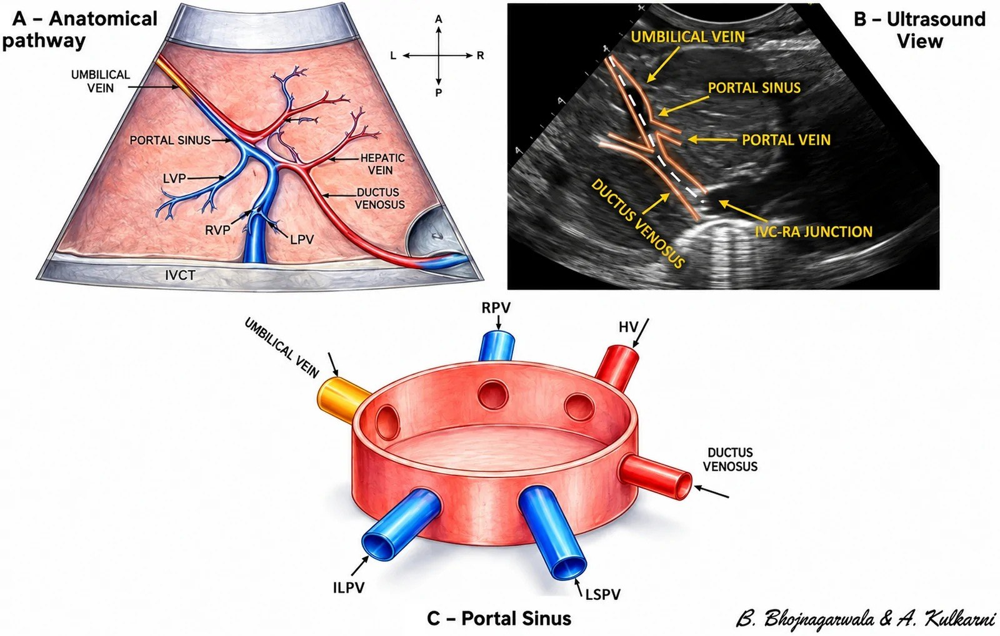
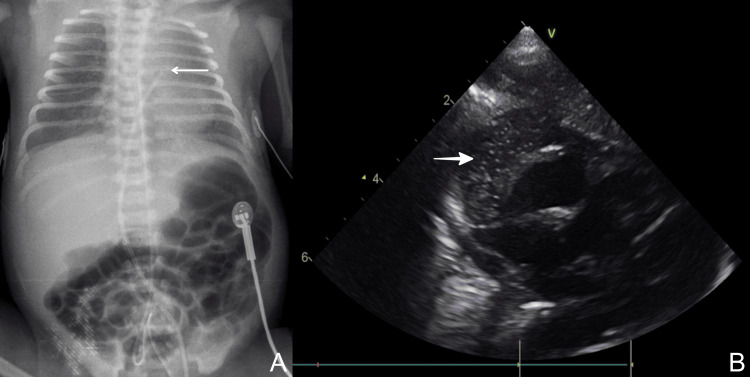
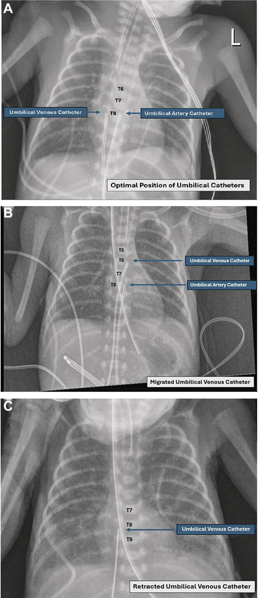
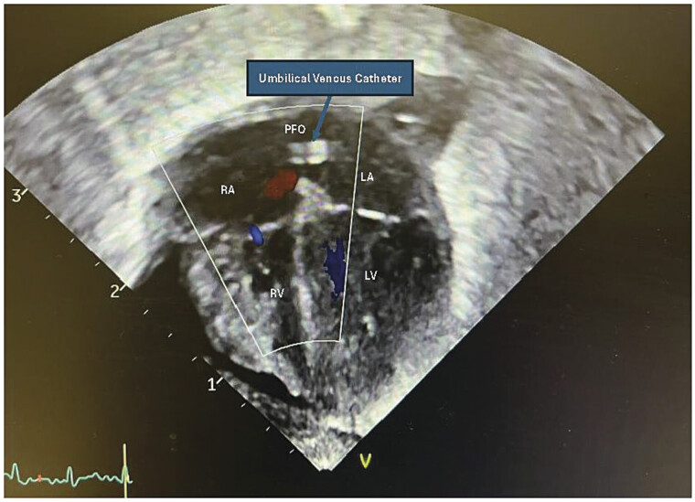
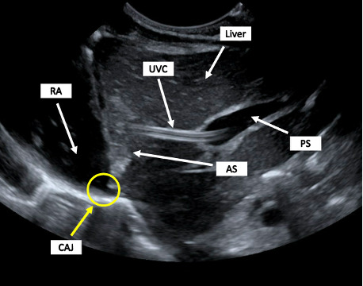

3045 — Catheter rốn ở sơ sinh (UVC/UAC): vị trí đúng trên phim, lạc vị trí và biến chứng sớm
Tags: pattern:catheter-lac-vi-tri pattern:dich-mang-tim pattern:huyet-khoi-tinh-mach-cua vung:roi vung:gan vung:tim protocol:X-quang-nguc-bung protocol:POCUS incidentaloma:khong
Mức chắc chắn (certainty): tổng hợp y văn (literature synthesis) — ghép hướng dẫn Trung Quốc 2025 về biến chứng catheter tĩnh mạch rốn (Pediatr Investig, PMC12921635), ca UVC lạc vào gan được phát hiện bằng POCUS (POCUS J 2026, PMC13161783), ca UVC di lệch vào nhĩ trái qua lỗ bầu dục gây áp-xe cơ tim (AJP Rep 2026, PMC12807581), 4 ca tràn dịch màng tim sau UVC (Cureus 2025, PMC12821074) và hai đoàn hệ lớn về vị trí catheter (Children 2017, PMC5704133; J Vasc Access 2026, PMC13380652).
Câu hỏi thực hành: sơ sinh 28 tuần, đặt UVC 8 cm và UAC 12 cm ngày đầu. Phim thẳng: đầu UVC ngang T7, đầu UAC ngang T8. Ngày thứ 3 bé bụng chướng, thiểu niệu, tăng men gan, vẫn đang truyền TPN qua UVC. Câu hỏi: đầu catheter có đúng chỗ không? Có cần chụp lại? Có được truyền TPN tiếp không? Khi nào rút, khi nào chỉnh? Bài chốt ba việc: (1) đọc đúng mốc giải phẫu trên phim (UVC = góc IVC–nhĩ phải, T8–T10 hoặc 0,5–1,0 cm trên cơ hoành ở phim nghiêng; UAC cao = T6–T9); (2) hiểu rằng "đúng lúc đặt" không bằng "đúng ngày thứ 3" — 50–90% catheter di lệch trong 72 giờ đầu; (3) phân biệt lạc vị trí còn dùng được với lạc vị trí phải rút ngay. Nối 3044 – Catheter tĩnh mạch trung tâm ở trẻ, 6111 – Huyết khối tĩnh mạch thận sơ sinh, 622 – Tắc ruột sơ sinh.
1. Tổng quan bệnh học – cơ chế hình ảnh: vì sao "đúng vị trí" mới là chuyện sinh tử
- Đường đi giải phẫu của UVC ( umbilical venous catheter): tĩnh mạch rốn → xoang cửa (portal sinus) → ống tĩnh mạch (ductus venosus) → tĩnh mạch chủ dưới → góc IVC–nhĩ phải (cavoatrial junction, CAJ). Điểm chết người nằm ở chỗ xoang cửa KHÔNG phải mạch lớn: lưu lượng thấp, không pha loãng được dịch ưu trương (TPN, glucose ưu trương, thuốc vận mạch) → tổn thương nội mạc → huyết khối tĩnh mạch cửa, thoát mạch, hoại tử gan. Đây là lý do một đầu catheter "nằm trong gan" không được dùng để truyền, dù bệnh nhi chưa có triệu chứng.
- TẠI SAO đầu catheter phải ở CAJ: tại đó dòng máu lớn pha loãng dịch truyền ngay lập tức; cao hơn (trong nhĩ phải hoặc qua lỗ bầu dục sang nhĩ trái) thì đầu catheter cọ thành nhĩ mỏng của sơ sinh (thành nhĩ non tháng thiếu cơ/epicardium) → tràn dịch màng tim, chèn ép tim, loạn nhịp, huyết khối trong tim, tắc mạch hệ thống.
- Đường đi của UAC (umbilical arterial catheter): động mạch rốn → động mạch chậu trong → động mạch chậu chung → động mạch chủ. Vị trí cao (high) T6–T9 đặt đầu catheter dưới quai động mạch chủ và trên các nhánh tạng; vị trí thấp (low) L3–L5 đặt dưới động mạch thận, trên chỗ chia đôi; vị trí cực thấp (ultralow) ở chỗ nối động mạch rốn – động mạch chậu trong (Children 2017, PMC5704133; J Vasc Access 2026, PMC13380652).
- Vì sao catheter di lệch: dây rốn teo và khô, bụng chướng, thay tã, cử động, thay đổi áp lực trong lồng ngực — tất cả kéo/đẩy catheter. Hệ quả định lượng: 50–90% UVC di lệch trong 72 giờ đầu; trong một dự án cải thiện chất lượng, 57% catheter còn lưu vẫn lệch vào ngày 3–5, trung bình ngày 4; sau khi đưa POCUS vào quy trình, tỉ lệ này còn 30% và không còn ca thoát mạch (Eur J Pediatr 2026, PMC13558298; BMJ Open Qual 2026, PMC12911755).
- Thực tế "đặt đúng" thấp hơn ta tưởng: kiểm tra 211 lần đặt ở đơn vị hồi sức sơ sinh: đúng vị trí UVC 14% (trước can thiệp đào tạo) / 23% (sau), UAC 40% / 43% (Children 2017, PMC5704133). Nghiên cứu khác: phương pháp ước lượng bằng mốc rốn–mũi ức cho lạc vị trí 60,1% (Pediatr Investig 2025, PMC12921635).

Ba phần của một sơ đồ: (A) đường đi giải phẫu tĩnh mạch rốn → xoang cửa → ống tĩnh mạch → góc IVC–nhĩ phải; (B) hình siêu âm tương ứng với các mốc đó (tĩnh mạch rốn, xoang cửa, tĩnh mạch cửa, ống tĩnh mạch, góc IVC–nhĩ phải); (C) mô hình xoang cửa với 5 nhánh đổ vào — chỉ cần đầu catheter trượt sang một nhánh là lạc vào gan. Nguồn: Eur J Pediatr 2026 (PMC13558298), CC BY 4.0, nguyên bản.2. Mẫu hình + chẩn đoán phân biệt theo vị trí (gamut)
- Gamut theo vị trí đầu UVC: (a) đúng — CAJ: đầu catheter ở T8–T10 trên phim thẳng hoặc 0,5–1,0 cm trên cơ hoành trên phim nghiêng; (b) quá cao — trong nhĩ phải/nhĩ trái: nguy cơ chèn ép tim, loạn nhịp, huyết khối trong tim, áp-xe cơ tim; (c) quá thấp — trong xoang cửa/tĩnh mạch cửa: nguy cơ huyết khối tĩnh mạch cửa, hoại tử gan, thoát mạch dịch ổ bụng; (d) trong ống tĩnh mạch: thường chấp nhận được nhưng không ổn định, dễ trượt; (e) bất thường giải phẫu: tĩnh mạch rốn đôi/động mạch rốn thừa, situs inversus — catheter đi "đúng" mà vẫn sai đích.
- Gamut theo vị trí đầu UAC: (a) cao đúng — T6–T9; (b) quá cao — quai động mạch chủ/động mạch cảnh: nguy cơ thiếu máu não, co giật; (c) thấp — L3–L5; (d) cực thấp — động mạch chậu trong: kỹ thuật mới, an toàn trong một đoàn hệ nhưng khác hẳn "low position" cổ điển; (e) gập/kinking hoặc xoắn trong động mạch chậu.
- Gamut theo biến chứng (khi đã có triệu chứng): tràn dịch/chèn ép tim (đau ngực không biểu hiện được → tụt huyết áp, tím, nhịp nhanh, EF giảm) · thoát mạch dịch vào gan/ổ bụng (bụng chướng, ascites, dịch có glucose cao) · huyết khối tĩnh mạch cửa (gan to, men gan tăng, giảm tiểu cầu) · nhiễm khuẩn huyết liên quan catheter (CLABSI) · thiếu máu chi dưới do UAC (mông/tay chân tím, đau, liệt) · hoại tử ruột.

Một ca trong loạt 4 ca tràn dịch màng tim sau đặt UVC: (A) phim ngực–bụng thẳng, đầu UVC quá cao (mũi tên) so với vị trí mong muốn; (B) siêu âm tim thấy khoảng dịch màng tim (mũi tên). Trong loạt này 2/4 ca tiến triển chèn ép tim; một ca phân suất tống máu 20% → 55% ngay sau chọc dẫn lưu dưới hướng dẫn siêu âm. Nguồn: Cureus 2025 (PMC12821074), CC BY 4.0, nguyên bản.3. Bảng so sánh phân biệt (ma trận đối chiếu)
| Thực thể (entity) | Hình ảnh điển hình | Chốt vào (rule-in) | Chốt loại (rule-out) | Gợi ý xác nhận |
|---|---|---|---|---|
| UVC đúng vị trí (CAJ) | Đầu catheter T8–T10 phim thẳng, 0,5–1,0 cm trên cơ hoành phim nghiêng; siêu âm thấy đầu ở góc IVC–nhĩ phải | Siêu âm thấy đầu catheter trong lòng IVC tại góc CAJ + bơm thử nước muối thấy luồng đi lên | Đầu ở gan, trong nhĩ, hoặc không thấy trên siêu âm | POCUS 3 mặt cắt; phim thẳng + nghiêng trong 0–2 giờ |
| UVC quá cao (nhĩ phải/nhĩ trái) | Đầu catheter trên cơ hoành nhiều, có thể bắt chéo lỗ bầu dục; bóng tim to, tràn dịch | Đầu trong nhĩ + tràn dịch màng tim + tụt huyết áp | Đầu dưới cơ hoành, không có dịch màng tim | Siêu âm tim (4 buồng + dưới sườn); rút/chỉnh ngay |
| UVC lạc vào gan/xoang cửa | Trên phim thẳng đầu catheter vẫn ngang cột sống (giả "đúng"); siêu âm thấy catheter đi vào nhánh cửa rồi vào nhu mô gan | Bơm thử nước muối: luồng đi vào nhu mô, không về IVC | Đầu catheter trong IVC, luồng đi lên | POCUS + bơm thử; không truyền TPN qua vị trí này |
| Huyết khối tĩnh mạch cửa (PVT) sau UVC | Tĩnh mạch cửa giãn, có vật đặc trong lòng, Doppler mất/tối dòng, gan to | Thấy huyết khối trong tĩnh mạch cửa + giảm dòng | Tĩnh mạch cửa trống, dòng bình thường | Siêu âm Doppler; tỉ lệ 19% (200/1052) sau UVC |
| UAC cao đúng (T6–T9) | Đầu catheter ngang T6–T9, thẳng trục động mạch chủ | Đầu trong động mạch chủ ngực, dưới quai | Đầu trong quai/động mạch cảnh hoặc dưới động mạch thận | Phim thẳng + siêu âm; kiểm tra mỗi ngày |
| UAC lạc/thiếu máu chi | Đầu catheter trong động mạch chậu trong, hoặc gập; mông/tay chân tím, lạnh | Da tím loang + mất mạch mu chân + đầu catheter sai vị trí | Da hồng, mạch rõ, đầu catheter đúng | Doppler mạch chậu–đùi; rút catheter + heparin theo cân nặng |
4. Protocol chụp + ngưỡng xử trí
- Xác nhận vị trí trước khi truyền bất cứ dịch gì (Pediatr Investig 2025, khuyến cáo 1B): phim ngực–bụng thẳng + nghiêng trong 0–2 giờ sau đặt; POCUS thay thế được nếu đơn vị có người được huấn luyện. Lặp lại 24–48 giờ và ngày 7.
- Vì sao phải có phim nghiêng: bờ trước cơ hoành cao hơn bờ sau, nên một đầu catheter "ngay trên cơ hoành" trên phim thẳng có thể đã ở trong nhĩ phải; và ngược lại một catheter trong xoang cửa vẫn chiếu lên cột sống trông như đúng.
- POCUS — 3 mặt cắt, 2 đầu dò: (1) mặt cắt ngang bụng ("situs") xác định tĩnh mạch rốn; (2) mặt cắt dưới sườn thấy IVC và góc CAJ; (3) mặt cắt vành/xiên theo dõi đường đi trong gan; dùng đầu dò curvilinear cho đường đi trong gan, linear tần số cao cho đầu catheter tại CAJ. Bơm thử 1–2 mL nước muối để xác nhận catheter trong lòng mạch (thấy luồng) hay trong nhu mô (không luồng, có thể thấy dịch lan trong gan).
- Độ chính xác (ngưỡng định lượng): so với phim, POCUS xác định góc CAJ Se 93,3% / Sp 95,6% còn X-quang 66,7% / 63,0% (p < 0,001, n = 60); gộp 9 đoàn hệ (n = 782), X-quang Se 0,70 / Sp 0,80; hướng dẫn siêu âm thời gian thực giảm lạc vị trí 75,9% → 9,6% (OR 29,5) (Eur J Pediatr 2026, PMC13558298; Pediatr Investig 2025, PMC12921635).
- Ước lượng độ sâu — đừng tin một công thức: RCT 158 sơ sinh so Gupta (khoảng cách rốn–núm vú − 1 cm) với Shukla cải tiến ((3 × cân nặng kg + 9)/2): đúng vị trí 62,5% vs 45,7% (p = 0,02); ở trẻ nhỏ so tuổi thai (SGA) 70,0% vs 42,9% (p = 0,04); đầu catheter quá thấp 14,8% vs 32,9% (p = 0,02) (Cureus 2025, PMC12441985).
- Xử trí theo vị trí — quy tắc "đặt sai thì chỉnh, di lệch muộn thì rút":
- Lạc vị trí ngay sau đặt → chỉnh/thay ngay dưới hướng dẫn siêu âm.
- Di lệch phát hiện ngày sau → rút catheter, không đẩy ngược vào lòng mạch (nguy cơ nhiễm và rách nội mạc).
- Đầu trong xoang cửa/tĩnh mạch cửa → không truyền TPN/dịch ưu trương/vận mạch, chỉnh hoặc rút.
- Đầu trong nhĩ phải/nhĩ trái hoặc có tràn dịch màng tim → rút ngay + siêu âm tim + chọc dẫn lưu nếu chèn ép.
flowchart TD
A[Dat UVC hoac UAC] --> B[POCUS + phim thang va nghieng trong 0-2 gio]
B --> C{Dau catheter dung vi tri}
C -->|Dung| D[Lap lai 24-48 gio va ngay 7]
C -->|Sai ngay sau dat| E[Chinh hoac thay duoi huong dan sieu am]
C -->|Trong nhanh cua hoac gan| F[Khong truyen TPN qua catheter; chinh hoac rut]
D --> G{Dau catheter di lech so voi lan truoc}
G -->|Khong| H[Tiep tuc theo doi hang ngay, khong sieu am tim thuong quy]
G -->|Co| I[Rut catheter, khong day nguoc]
F --> J{Bung chuong, tang men gan, giam tieu cau}
J -->|Co| K[Doppler tinh mach cua va IVC: huyet khoi, thoat mach]
K --> L[Doi duong truyen, hoi chan ngoai khoa neu hoai tu hoac ap xe]
- Biến chứng và con số phải nhớ: huyết khối liên quan catheter trung tâm ở sơ sinh 9,2% (308/3332); ở UVC, vị trí hay gặp là tĩnh mạch cửa 42,6%, IVC 22,8%, nhĩ phải 11,9%, và 70–77% không tắc hoàn toàn. Huyết khối tĩnh mạch cửa sau UVC: 19% (200/1052, dao động 0–49%); truyền máu qua catheter là yếu tố nguy cơ (p = 0,0024); vị trí đầu catheter KHÔNG liên quan có ý nghĩa (p = 0,4636) — một kết quả ngược trực giác, nghĩa là không thể chỉ dựa vào "đầu đúng" để yên tâm (J Pediatr 2026, PMC13285700).
- Không tầm soát huyết khối thường quy: nghiên cứu tiến cứu 40 sơ sinh sau UVC thấy 75% (30/40) có huyết khối nhưng tất cả không triệu chứng và tự tan — vì vậy hướng dẫn không khuyến cáo siêu âm tầm soát thường quy (khuyến cáo 1D) (Pediatr Investig 2025).
- UAC — thời gian lưu: lưu > 5 ngày liên quan viêm ruột hoại tử giai đoạn III (NEC-III): AOR 3,8 (1,05–13,66) so với không NEC và 5,57 (1,65–18,73) so với NEC-II (JPGN Reports 2024, PMC11322019). Huyết khối do UAC 12,3–44% tùy phương pháp chẩn đoán; kỹ thuật cực thấp ở 229 sơ sinh cho 0 huyết khối, biến chứng khác 4,3% (J Vasc Access 2026, PMC13380652).
5. Biến thể bình thường và cạm bẫy
- "T8 trên phim thẳng" không đồng nghĩa "trong IVC": catheter trong xoang cửa vẫn chiếu lên cột sống ngang T8–T9 — luôn cần phim nghiêng hoặc siêu âm trước khi truyền TPN.
- Không đẩy catheter đã di lệch trở lại: hướng dẫn 2025 nói rõ lạc vị trí ngay sau đặt thì chỉnh, còn di lệch phát hiện ngày sau thì RÚT — đẩy ngược làm tăng nguy cơ nhiễm và tổn thương nội mạc.
- Khí trong tĩnh mạch cửa sau rút UVC là bình thường: vài đốm khí nhỏ, tự hết trong 1–2 ngày, không phải khí trong hệ cửa do hoại tử ruột — đừng mổ vì "khí cửa" đơn thuần; đối chiếu bụng mềm, lactate, X-quang.
- "Fibroelastic sleeve" không phải huyết khối: vỏ xơ mỏng bao quanh catheter là phản ứng sinh lý, không tắc dòng; chỉ gọi huyết khối khi thấy vật đặc trong lòng + mất dòng — tránh điều trị kháng đông oan.
- Không phải cứ "dịch ra từ ống" là dịch tiêu hóa: một ca 27 tuần đã có thủng ruột tự phát + dẫn lưu, rồi UVC di lệch vào gan gây thoát mạch: dẫn lưu ra dịch trong, lượng tăng bất thường (30 mL/24 giờ) dù đã tăng dịch truyền; rút UVC → dịch giảm rõ trong 12 giờ. Bài học: dẫn lưu ổ bụng "nhiều bất thường" ở trẻ có UVC phải nghĩ catheter, không chỉ nghĩ rò tiêu hóa (World J Clin Pediatr 2026, PMC13010535).
- Vị trí "thấp" của UVC không phải lựa chọn trung tính: xoang cửa không phải mạch lớn, nên "thấp cho an toàn" thực ra nguy hiểm hơn cho TPN ưu trương.
- UAC "thấp" (L3–L5) khác "cực thấp" (ngã ba rốn–chậu trong): đừng dùng số liệu an toàn của kỹ thuật cực thấp để bảo vệ vị trí thấp cổ điển — hai thứ khác nhau (J Vasc Access 2026).
- Bỏ sót sau khi đã thấy một bất thường: đã thấy đầu UVC lạc là dừng — nhưng UAC cùng lúc cũng có thể lạc; luôn đọc cả hai catheter và cả hai phim (thẳng + nghiêng).
6. Tự lượng giá — Blind Quiz
Ca 1 — Sơ sinh non tháng, phim ngực–bụng ngày 1 và ngày 3.

- Gợi ý lâm sàng: đặt UVC 8 cm và UAC 12 cm; ngày 3 bụng chướng nhẹ, vẫn truyền TPN.
- Câu hỏi: Đọc mốc đốt sống của hai đầu catheter trong (A). Ở (B) có gì thay đổi? Vì sao (C) lại là "kéo lại" chứ không phải "đẩy vào"?
Bấm để hiện đáp án (findings + chẩn đoán)
- Dấu hiệu (findings): (A) UVC T8, UAC T8 — cả hai trong khoảng mong muốn (UVC T8–T10, UAC cao T6–T9); (B) UVC di lệch lên T6 (vào vùng nhĩ phải) trong khi UAC vẫn T8; (C) sau khi kéo, UVC trở lại T8, UAC đã rút ngày 5.
- Chẩn đoán (diagnosis): di lệch đầu UVC sau đặt (tip migration) — biến chứng thường gặp nhất, xảy ra ở 50–90% trong 72 giờ đầu.
- Vì sao "kéo" không "đẩy": đầu catheter đã ở trong nhĩ; đẩy vào làm tăng nguy cơ thủng nhĩ/tràn dịch màng tim và nhiễm. Quy tắc: lạc ngay sau đặt → chỉnh; di lệch muộn → rút.
- Nguồn ảnh: AJP Rep 2026 (PMC12807581), CC BY 4.0, nguyên bản (giữ nhãn A/B/C và mốc T5–T8 của tác giả).
Ca 2 — Cùng bệnh nhi ngày 5: tím tái, nhịp nhanh, tụt huyết áp.

- Gợi ý lâm sàng: đang thở máy, vừa tăng dịch truyền qua UVC; cấy máu dương tính Streptococcus nhóm B.
- Câu hỏi: Catheter đang ở đâu? Vì sao bệnh nhi đột ngột xấu? Hai biến chứng phải loại trừ ngay trên siêu âm tim?
Bấm để hiện đáp án
- Dấu hiệu (findings): catheter từ nhĩ phải bắt chéo qua lỗ bầu dục (PFO) vào nhĩ trái (nhãn UVC, RA, LA, RV, LV).
- Chẩn đoán (diagnosis): UVC lạc trong tim, sang nhĩ trái — nguy cơ tắc mạch hệ thống, huyết khối/nhiễm trong tim, áp-xe cơ tim; ca gốc có áp-xe cơ tim do Streptococcus nhóm B.
- Hai biến chứng loại trừ ngay: tràn dịch/chèn ép tim và huyết khối trong buồng tim — cả hai đều thấy trên cùng mặt cắt 4 buồng + dưới sườn.
- Nguồn ảnh: AJP Rep 2026 (PMC12807581), CC BY 4.0, nguyên bản.
Ca 3 — UVC "trông đúng" trên phim thẳng nhưng bụng chướng, men gan tăng.

- Gợi ý lâm sàng: phim thẳng đọc "đầu catheter ngang T9"; ngày 3 bụng chướng, ALT/AST tăng, tiểu ít.
- Câu hỏi: Đầu catheter thực sự ở đâu? Dấu hiệu nào trên siêu âm chứng minh? Nếu bơm 2 mL nước muối qua catheter thì thấy gì (và không thấy gì)?
Bấm để hiện đáp án
- Dấu hiệu (findings): catheter đi qua tĩnh mạch rốn (UVC) vào xoang cửa (PS) rồi vào nhu mô gan, trong khi góc IVC–nhĩ phải (CAJ) — vòng tròn vàng — không có catheter; nhĩ phải (RA) trống.
- Chẩn đoán (diagnosis): UVC lạc vào gan/xoang cửa — đây là vị trí không được truyền TPN ưu trương; nguy cơ huyết khối cửa, hoại tử gan, thoát mạch dịch.
- Bơm thử: thấy luồng/dịch lan trong nhu mô gan, không thấy luồng đi lên IVC → xác nhận ngoài lòng mạch lớn.
- Xử trí: ngừng truyền qua catheter, chỉnh dưới siêu âm hoặc rút, chuyển sang đường truyền khác.
- Nguồn ảnh: POCUS J 2026 (PMC13161783), CC BY 4.0, nguyên bản.
Bài liên quan chéo
- 3044 – Catheter tĩnh mạch trung tâm ở trẻ: chọn đường vào, xác nhận đầu catheter, biến chứng sớm
- 3043 – Hẹp–tắc tĩnh mạch chủ trên lành tính sau catheter ở trẻ
- 6111 – Huyết khối tĩnh mạch thận ở trẻ sơ sinh
- 622 – Tắc ruột sơ sinh
- 691 – Siêu âm và soi quanh catheter ở trẻ
- 600 – Tổng quan Nhi khoa
Ảnh
- 5 ảnh, tất cả tải về nguyên bản (không crop, không ghép), ghi nguồn + giấy phép từng ảnh trong
images/CREDITS.md. - Không tạo composite: ảnh A của PMC12807581 đã là 3 panel của cùng một bệnh nhi (đúng → di lệch → kéo lại); ghép thêm sẽ trùng lặp và làm mất nhãn mốc đốt sống của tác giả. Sơ đồ đường đi (PMC13558298) là hình vẽ giải phẫu, không ghép với ảnh bệnh nhân.
Không dùng để chẩn đoán độc lập khi chưa có người hướng dẫn.